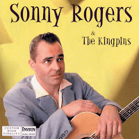

Sonny Rogers and the Kingpins - Sonny Rogers And The Kingpins (Album, 1999)
01 - Rockin' Rhythm (1:58)
02 - Breakin' Hearts (2:14)
03 - Get Out Of My Car (2:05)
04 - Black Smoke & Blue Tears (2:12)
05 - High Geared Mama (1:45)
06 - Lizzie Lou (2:06)
07 - Gotta Rock It (2:26)
08 - Look Who's Crying Now (1:54)
09 - High Speed Pursuit (1:41)
10 - Alone With A Broken Heart (1:45)
11 - I've Changed My Wild Mind (1:46)
12 - Lonesome Tears In My Eyes (2:04)
13 - Lovers Rock (2:38)
14 - I've Got Leaving On My Mind (2:11)
© Enviken Records :: [EnRec CD105]
Notes
Sonny Rogers - Vocals, Rhythm guitar
Fredrik Rosen - Lead guitar
Ulf Torstensson - Upright bass
Mattias Eriksson - Drums
Sören Andreassen - Upright bass on tracks 11, 12, 13, 14
Patrik Staffansson - Drums on tracks 11, 12, 13, 14
Andre Hakwinson - Lead guitar on tracks 11, 12, 13
Jonas Olpers - Lead guitar on track 14
Recorded at Enviken Studios
Engineered by Patrik Staffansson
reference information: Discogs®
Review
002/366 (Project 366)
One very good and reputable man advised me to listen to this musician. I usually ignored Enviken Records releases, although it was known for me about their qualitative approach. When I listened to the recordings of Sonny Rogers and this album in particular - I was so impressed. It is almost the perfect Rockabilly sound. A unified solid set of the greatest techniques with a huge diversity though. This can be called country rockabilly with slices of hillbilly, folk ballads and with rockin' bop tone! Dainty tunes... Sonny Rogers also has a quite memorable voice and a catchy manner of performance. Listening to this (and the musical accompaniment too) is just a pleasure, enjoyment and desire to dive yourself in the sound! I also really like how the guitar comes in very accurately and appears so pertinently. The chosen songs for the tracklist are a stylish choice, not the most hackneyed hits and, actually, this is good. And even better - they are really hits!
"Rockin' Rhythm" is a wonderful start. Very characteristic sound for the whole album. Rhythm is indeed pretty rocking one and rollicking tune with rustic feelings invigorates enough. The tempo changes and guitar solos are very nice. This first track also with many subtle additions that decorate the song very much. The next song "Breakin' Hearts" is enough melodic and generally quite beautiful. Country love motive with sincere singing. The musical accompaniment is classy. Drums, guitars, doublebass - they do what is supposed to be done and do it with excellence! The song itself is pretty easygoing but filled with meaning and feelings. Meanwhile "Get Out Of My Car" is already a much more expressive thing. With tasty flavour of somewhat hillbilly, somewhat rockin' boogie. It sounds so authentic that it is even surprising. Terrific! The fourth song with a whirlwind of ballads and adventure motives, "Black Smoke & Blue Tear" is about thrilling story and the sound represents this well. The fifth track "High Geared Mama" has a kind of excited feel with strong rhythm and guitar sketches. Such a fervent mood continues with the next track "Lizzie Lou". Sweetest and greatest song. It's just the way it is.
Really satisfied with the sound of the first six tracks and just flowing along with these wondrous tunes. This way, the cyclic motive of the seventh song "Gotta Rock It" is felt well. Burning crazy sound. Lovely! One more beauty country rockabilly number is "Look Who's Crying Now". This song replenishes you with good impressions. Rockabilly in its best form. At least, in one of its best. Because the ninth track "High Speed Pursuit" is about no less mighty and groovy side of Rockabilly. And delectable sound of "Alone With A Broken Heart" is also characteristic of the album.
Then there are four remarkable tracks (bonus tracks for CD release): "I've Changed My Wild Mind", "Lonesome Tears In My Eyes", "Lovers Rock", "I've Got Leaving On My Mind". All in all, they are about love. But with different mood and tone for each track. In addition, these recordings are a bit more smoky and not always completely smooth, but always atmospheric. For example, "I've Changed My Wild Mind" with catchy chanting, "Lonesome Tears In My Eyes" with partying sound of fifties pop and fab singing. But these two songs and the other two are remembered by a distinct authentic sound. And in the brightest parts of the songs - just want to trample the floor! The last track "I've Got Leaving On My Mind" is also one of my favourites. A rather ironic composition in both text and sound, in the good sense of these words. But it is a great composition. Just as should be for the great songs. Of course, I would very much like to hear a bit more their own songs. However such high quality cover versions are also very interesting (just think it over - classics sounds still as classic songs; but it is also even so refreshingly good).
A wonderful example of ageless Authentic Rockabilly, hillbilly bop and Country inspiration.